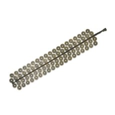

| |
The purchase of
intact collections is now a much rarer event than the acquisition of
hoards. Nevertheless, such purchases are occasionally still made. Notably,
in 1996 the museum bought the entire collection of Chinese coins of
the Reverend S. Box, who served as a missionary in China from 1926 to
1952. The collection covers the whole history of Chinese coinage. It
is particularly strong in early material but also includes, for example,
655 different issues from the period 1895-1920 alone. Another large
acquisition has been the purchase since 1987 of some 1100 tokens from
the Norweb collection. These have greatly strengthened the museum’s
holdings of 17th-century private tokens.
A number of significant
single coins have also been purchased in recent years. These include
a remarkable and unique aureus of Octavian and the earliest known English
farthing. The aureus of Octavian was minted in 28 BC and constitutes
one of the most significant pieces of evidence on this momentous period
in Roman history to come to light in recent years. Octavian is depicted
in the act of restoring the constitution to the Roman people. The legend
reads ‘He has restored the laws and liberties of the Roman people’.
During this period Octavian transformed himself into Augustus, reconciling
one-man rule with republican traditions. The combination of word and
image on this piece clearly reveal Octavian’s outstanding sense for
politics that won him the Roman Empire and consigned the free Republic
to history. The silver farthing, which was acquired in 1991, represents
the earliest issue of English farthings and is currently the first and
only specimen from that issue known to exist. The coin’s moneyer, Terri
of London, was one of four moneyers named on an order to produce dies
for round halfpence and farthings in the Patent Rolls for 1222.
The Museum’s collection
of paper money now runs to some 50,000 specimens, 30,000 of which are
on indefinite loan from the Chartered Institute of Bankers. The notable
acquisition in this series came in 1986, with the purchase of a collection
of around 12,500 notes. This material incorporated part of the collection
of the Marquis of Bute, put together during the 1930s, which in turn
incorporated the collection of George Pflumer which had been assembled
around the turn of the century.
In all, the Museum’s
collection of coins, medals and banknotes numbers nearly one million
objects. The collection is so large because the department’s policy
is to aim at completeness, in order that its holdings may serve as a
key reference collection. Much like a large reference library, it is
extensively consulted by scholars and members of the public in the department’s
Study Room. In recent years, around 100,000 objects annually have been
made available in this way. The department also contains the most extensive
numismatic library in the country.
3 of 3
1
- 2 - 3
|
|

Coin tree of brass Guangxu zhongbao coins, Board of Revenu Mint, Beijing,
China. Qing dynasty, around AD 1905. Example of how Chinese coins were
cast in moulds.
|
|
|
|